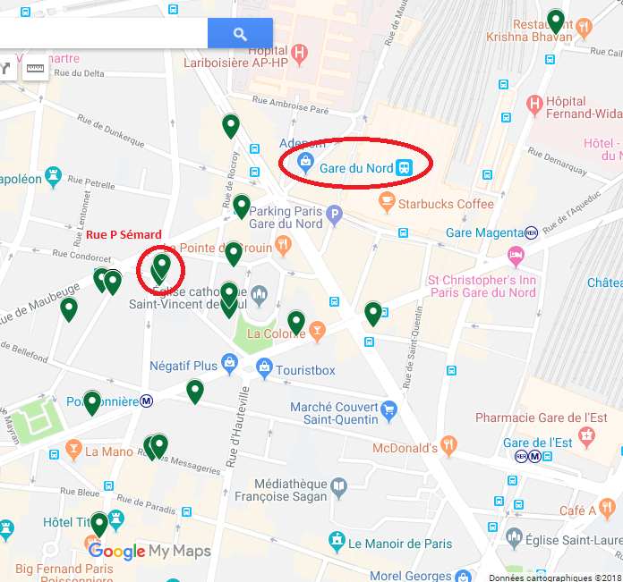
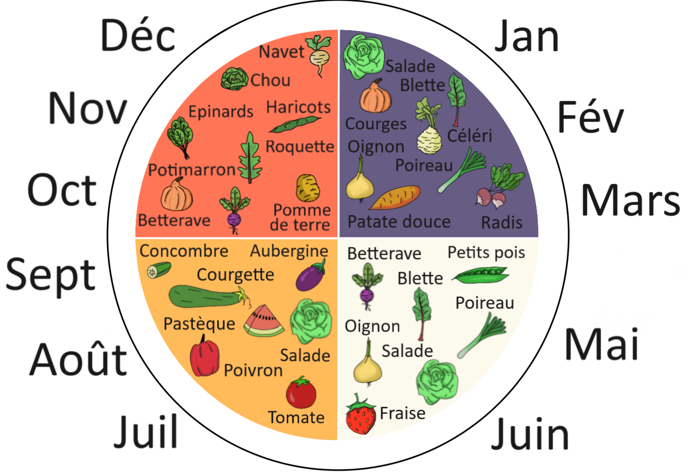

La Sapinière
De mai 2017 à juillet 2019, les abonnés parisiens ont accompagné le démarrage de la ferme :
C'est le nombre d'abonnés que nous avons atteint en l'espace de 2 ans à Paris.
C'est le nombre moyen de panier par an.
C'est le coût d'un panier.
Le partage avait lieu dans la cour de l'immeuble où habitait la famille du paysan et 8 abonnés ! Pour eux, c'est quasiment de la vente à domicile. Les autres abonnés viennent de la rue, et de quelques rues avoisinnantes, à moins de 15 minutes à pied :
Le partage avait lieu en général le samedi de 12 à 13h. Les autres habitants du 32 sont invités à partager quelques moments agréables (galette des rois, fête des voisins, ...) en échange de leur accueil. Plusieurs en profitent pour faire des achats ponctuels de légumes, en cas de surplus.
Le partage est conduit par un ou deux abonnés. En cas d'impossibilité de prendre le panier dans le créneau, les paniers sont récupérables dans le hall jusqu'au lundi. C'est tout l'avantage d'être dans un lieu privé où plusieurs habitants (propriétaires ou locataires) sont impliqués.
La saison commence fin avril/début mai, avec les premiers légumes primeurs et les fraises, et se termine fin mars, avec l'épuisement des légumes en réserve (pommes de terre, betteraves et céléris).
Pendant le mois de "soudure" (avril), période de "carême" où l'on attend avec impatience les légumes frais, j'ai tenu un "petit marché" où je proposais les légumes disponibles au détail, car souvent en quantité insuffisante pour 25 paniers.
Il y en a pour tous les goûts. Il y a aussi des fèves, des brocolis, du fenouil ainsi que de nombreuses variétés de salades (mesclun, moutarde, pourpier, mizuna, mâche), de chou (Kale, rave, de Bruxelles, cabus pointu, rouge).
Cet été 2019, nous nous installons à plein temps à la ferme, et nous basculerons progressivement des abonnés parisiens aux abonnés de Nantes et Vendée.
L'expérience parisienne montre qu'on peut constituer une AMAP à taille humaine avec un petit groupe de 10 à 25 abonnés d'un quartier.
Pour Paris, un nouveau fermier prendra le relai.
Vous voulez jouer le jeu des légumes de saison ? ou tenter l'expérience ?
Vous aimerez être en relation directe avec votre producteur et son site ?
Vous aimeriez bien que les légumes arrivent directement chez vous ou dans votre quartier chaque semaine ?
Vous pensez utile de favoriser des actions respectueuses de l'environnement (soutien à l'agriculture naturelle), à votre santé, à la vie de voisinage ?
Faites nous signe dès maintenant, par mail tancrede.deguerry@gmail.com, ou téléphone 06 09 72 84 59.
Nous prendrons contact, enverrons le projet de contrat (lieu de distribution à fixer, période de trève en avril, contrat initial pour 3 mois, puis par année), et donnerons tous les éléments pour éclairer votre décision, et voir comment constituer un premier noyau.
Rester ou devenir client occasionnel. Dans ce cas, votre email sera dans la liste des clients pour les excédents, et je vous ferai signe quand la production dépasse le besoin pour les abonnés. Celà se produit principalement en période d'été, avec la pleine production de tomates, concombres et courgettes, et en hiver avec les courges et potirons pour les soupes d'hiver.
Devenir "ami du projet" : Rester au courant des évolutions du projet, pour pouvoir en parler autour de vous, venir nous voir, et vous décider plus tard... Dans ce cas, je mets votre email dans la liste des amis, et je vous ferai signe lors des évolutions et autres événements.
Dans tous les cas, merci d'avance et à très bientôt !